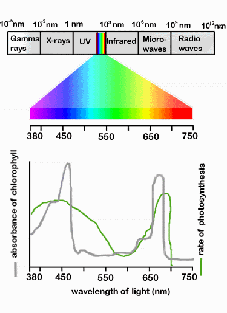

Нам часто задают вопросы, излучают ли наши фитолампы ультрафиолет, нужен ли ультрафиолет растениям для роста, вредны ли фитолампы для человека. Постараемся подробно ответить на эти вопросы.
Энергия, излучаемая Солнцем, достигает Земли в виде электромагнитного излучения. Это излучение имеет природу как волны, так и частиц. Частицы света носят название фотонов. Каждый фотон вибрирует, что определяет его энергетический заряд и длину волны.
Электромагнитное излучение, которое мы называем светом, подразделяется на ультрафиолет, свет видимого спектра и инфракрасный свет. Свет разной длины волны и энергетического заряда воспринимается человеком как свет разных цветов.
Солнечный свет содержит приблизительно 4% ультрафиолета, 52% инфракрасного света и 44% света видимого спектра.

Ультрафиолетовое излучение и растения
Каждый фотон ультрафиолетового излучения несёт слишком большой заряд энергии для клеток большинства растений. Высокий уровень энергии ультрафиолетового излучения способен разрушить слабые молекулярные связи внутри клеточной структуры. Ультрафиолет, излучаемый Солнцем, на нашей планете в основном поглощается кислородом в форме газов кислород (O₂) и озон (O₃). Озоновый слой в атмосфере Земли поглощает большую часть ультрафиолетового излучения и таким образом оберегает всё живое на планете.
Ультрафиолетовое излучение практически не играет роли в процессе фотосинтеза. Его избыток может навредить растению.
Инфракрасное излучение
В отличие от «чрезмерно энергичного» ультрафиолета, фотоны инфракрасного излучения несут слишком малый заряд энергии для того, чтобы быть полезным клеткам растения. Клетки растения отражают ультрафиолет.
На фотосъёмке в инфракрасном спектре видно, что деревья и трава приобретают белый оттенок. Это происходит именно потому, что растения отражают инфракрасный свет. В природе инфракрасный свет поглощает вода и углекислый газ (CO₂). Та часть инфракрасного спектра, которая всё-таки поглощается растением, просто преобразуется в тепло. Растениям не нужен инфракрасный свет.
Видимый свет спектра
Фотоны видимого человеком света содержат как раз такое количество энергии, которое требуется растению для фотосинтеза, то есть успешного роста и развития. Однако не весь свет видимого спектра одинаково полезен растению. Зелёный свет почти не участвует в фотосинтезе — он отражается от листьев. Поэтому мы воспринимаем листья большинства растений как зелёные. Напротив, красный и синий свет — ключевые цвета для фотосинтеза растений.
Наши фитолампы не излучают ультрафиолет. При чрезмерном воздействии, превышающем естественный фон, ультрафиолет может быть вреден и даже опасен для растений, животных и человека.
Фитолампы не излучают вредного для человека или животных света. Однако ряд исследований показывает, что при синем свете может ухудшаться качество сна. Поэтому учёные не рекомендуют смотреть телевизор или сидеть за монитором компьютера перед сном. Эти устройства также излучают свет синего спектра, как и некоторые бытовые лампы с цветовой температурой более 6400 K.
Мы рекомендуем ставить фитолампы так, чтобы их свет не мешал вам ночью. Пожалуйста, также воздержитесь от разглядывания работающих светодиодов. Они достаточно яркие — это просто правило здравого смысла.